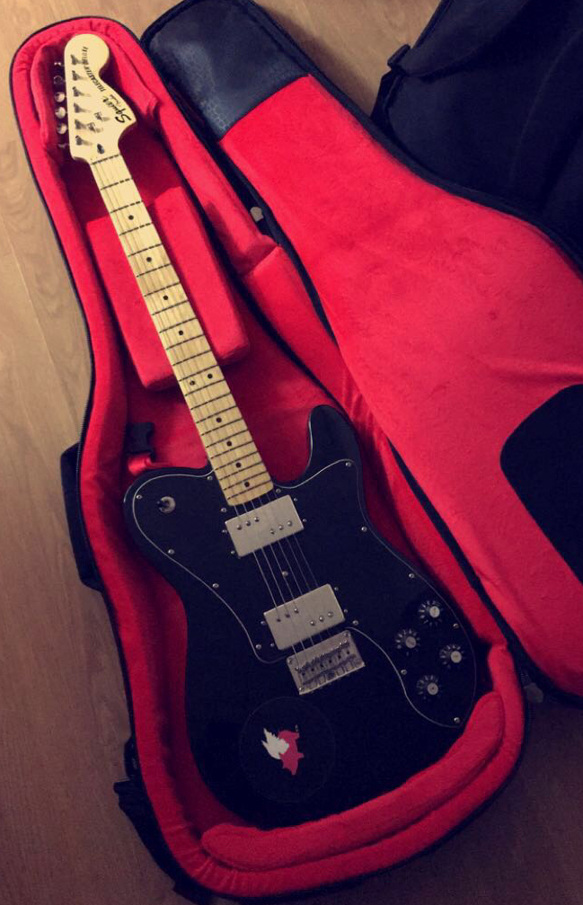
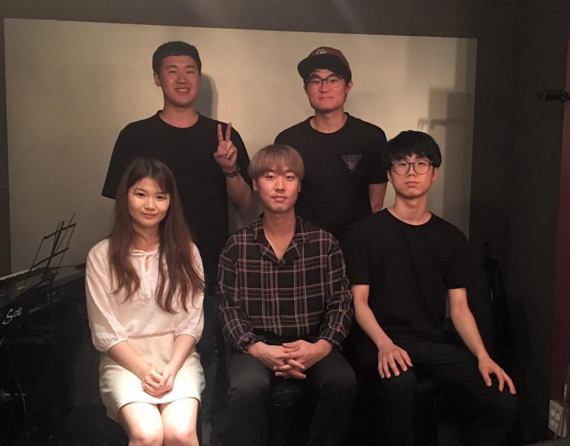

Tommy Choi

Hi! Welcome to my site. I'm an Innovation Lab student from Ross School in East Hampton, New York. On this site, you will be able to check out my biography, school / personal projects, and my additional interests.
Hi! Welcome to my site. I'm an Innovation Lab student from Ross School in East Hampton, New York. On this site, you will be able to check out my biography, school / personal projects, and my additional interests.
My name is Yun Joon Choi and I'm from South Korea. I am a high school student and attend Ross School located in East Hampton, New York. I've decided to study aborad as I wanted to learn English professionally, go to American College, and reach out my career dream in U.S. Cureently, as I enjoy rock music in most of my life, not only I've formed several bands and haven been playing in the Hamptons but also I've formed my own record company and produced several records. With this interest, I'll be going to college to study audio production in college, hoping to become an audio engineer in my future career.
Music has been my most effective prescription for pain since moving to the United States in grade ten. From grade nine I began playing guitar and learned through various tutors, books, and even online lectures. Studying in school to enhance my fundamental understanding, I enrolled in a Music Theory course this year. In addition, after-school guitar lessons and then an internship at JMG Corporation truly made me well-rounded in both musical education and training. Combining classroom aptitude alongside applicable experience, I joined JMG Corporation as an intern during the last three summers, gaining experience in sound engineering working alongside the chief sound engineer helping to produce more than 100 recordings for use in television commercials, movies, town elections, and holiday jingles. On the software end of my training, I led a group of eight interns in constructing technological platforms in order to better serve the needs of our business and other partner companies as the Head Intern for The Classic Consulting Firm. In my music theory course, I learned the fundamentals and technical skills in order to better understand the production of music, relationship between producers, artists, and the public sphere. This course had a significant influence in my yearning in Music Technology.
 For my Senior Project, I have composed 5 tracks of emotional rock music and produced an E.P. (Extended Play Record) Album in CD and Digital Record on online music streaming sites (iTunes, Spotify, Amazon Music, and Google Play) with my record label Choisters Records and band Choisters . The theme of my music is Empathy and my objective was to indirectly convey it through the lyrics and cure listeners who are suffering from inconvenient mentalities: anger, depression, and anxiety. The tracks are constituted of band instruments such as vocals, guitars, bass, software drums, and synthesizer and are produced into Intro, Outro, and 3 songs with lyrics in different perspectives: myself, others, and us. I have used an acoustic guitar for general compositions and directly recorded electric instruments and vocals through audio interface on Apple Music Production Software Logic X Pro. With this music, I have conducted a show with my band Choisters at the Stephen Talkhouse and donated its admission fee to the charity organization Music for Relief to help mental disabled and catastrophes. The sales from CD and Digital Records will also be donated. With this project, I want to empathize with issued psychological troubles and help listeners with the power of music.